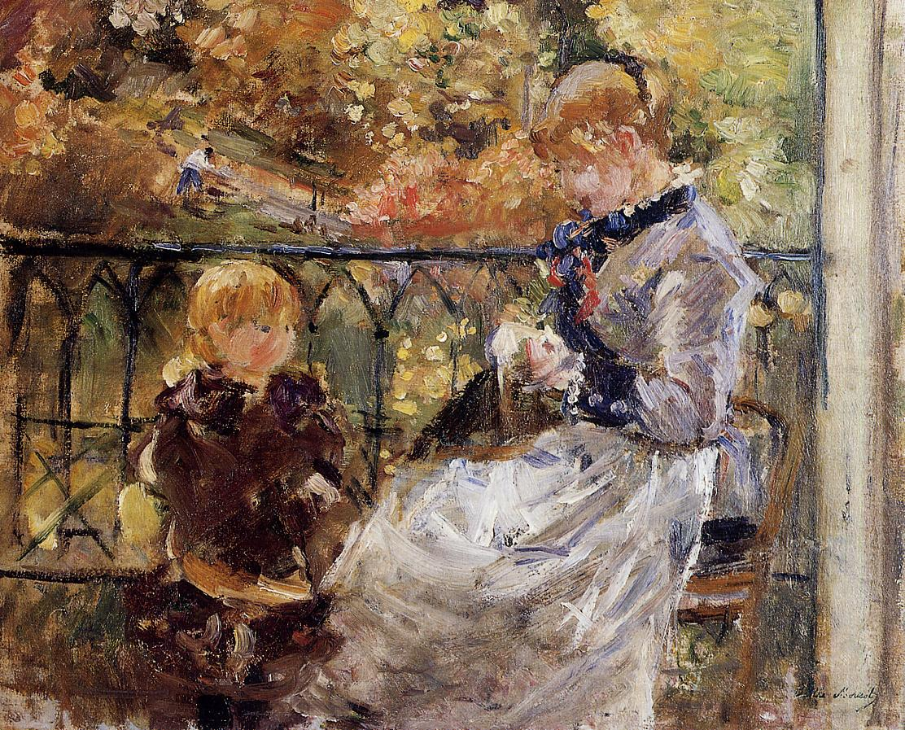

Tags: leisure-and-sleep
Style: Impressionism
Artist: Morisot Berthe
Title: On the Balcony of Eugene Manet's Room at Bougival
Year: 1881
Genre: genre painting
Categories: padlock (25.5%); honeycomb (13.7%); nail (7.0%); window_screen (4.6%); chiton (4.1%)